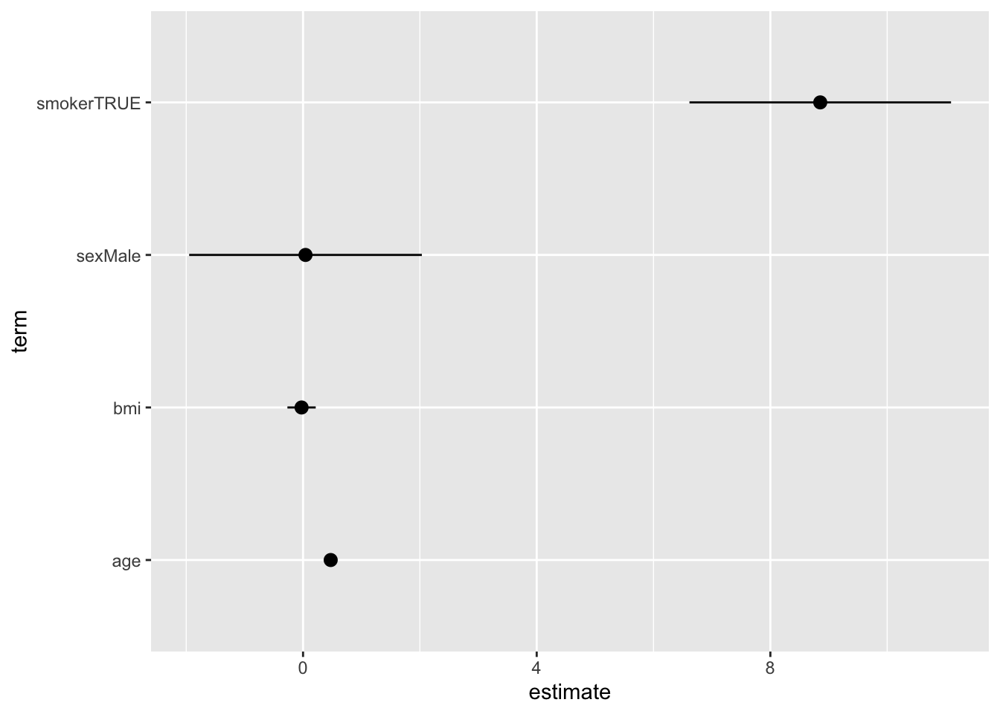

library(dplyr)
library(ggplot2)
library(broom)
library(gtsummary)
set.seed(1234)Working with many packages
In practice, most R analyses load a handful of packages at once. That’s great — each package solves a specific problem — but it also creates two challenges:
- Conflicts: two packages may export a function with the same name.
- Compatibility: does the output of one package feed naturally into the next?
This lesson covers both.
Some data to work on
n <- 500
df <- tibble(
id = 1:n,
age = rnorm(n, mean = 55, sd = 12) |> round(),
sex = sample(c("Male", "Female"), n, replace = TRUE),
smoker = sample(c(TRUE, FALSE), n, replace = TRUE, prob = c(0.3, 0.7)),
sbp = round(120 + 0.4 * age + 8 * smoker + rnorm(n, sd = 12)),
bmi = round(rnorm(n, mean = 26, sd = 4), 1)
)
df |> head(8) |> gt::gt(id = "patient_tbl")| id | age | sex | smoker | sbp | bmi |
|---|---|---|---|---|---|
| 1 | 41 | Female | FALSE | 122 | 33.2 |
| 2 | 58 | Male | FALSE | 147 | 20.5 |
| 3 | 68 | Female | FALSE | 129 | 23.2 |
| 4 | 27 | Male | TRUE | 146 | 23.8 |
| 5 | 60 | Female | TRUE | 160 | 24.8 |
| 6 | 61 | Female | TRUE | 130 | 24.5 |
| 7 | 48 | Male | FALSE | 150 | 27.8 |
| 8 | 48 | Male | TRUE | 145 | 21.0 |
Loading order and function masking
Every time you call library(pkg), R attaches the package to the search path — a list of environments R looks through, left to right, when you type a name.
search() [1] ".GlobalEnv" "package:gtsummary" "package:broom"
[4] "package:ggplot2" "package:dplyr" "package:stats"
[7] "package:graphics" "package:grDevices" "package:utils"
[10] "package:datasets" "package:methods" "Autoloads"
[13] "package:base" The last package you load sits at position 2 (just after .GlobalEnv), so its functions are found first. When two packages share a function name, the one loaded later silently masks the earlier one.
A concrete example
Both {dplyr} and {MASS} have a function called select(). After library(MASS), typing select() calls the MASS version — the dplyr one is still there, just hidden.
library(dplyr)
library(MASS)
Attaching package: 'MASS'The following object is masked from 'package:gtsummary':
selectThe following object is masked from 'package:dplyr':
selectR warns you but proceeds - there’s no guarantee you will notice the warning message in a busy session.
Four solutions to masking
1. Explicit namespacing with ::
The safest habit: write pkg::function() for any function that might be ambiguous.
# Always unambiguous:
df |> dplyr::select(id, age, sbp) |> head(3)# A tibble: 3 × 3
id age sbp
<int> <dbl> <dbl>
1 1 41 122
2 2 58 147
3 3 68 129This works even when a function is masked, and makes code easier to read and share.
2. The {conflicted} package
{conflicted} turns silent masking into a loud error, forcing you to be explicit. Load it at the top of your script and every ambiguous call will stop with a helpful message.
library(conflicted)
# conflicted is already loaded above; now any ambiguous call errors:
filter(df, age > 70)Error:
! [conflicted] filter found in 2 packages.
Either pick the one you want with `::`:
• dplyr::filter
• stats::filter
Or declare a preference with `conflicts_prefer()`:
• `conflicts_prefer(dplyr::filter)`
• `conflicts_prefer(stats::filter)`You resolve the conflict once using conflict_prefer():
conflict_prefer("filter", "dplyr")[conflicted] Will prefer dplyr::filter over any other package.Now filter() unambiguously refers to the dplyr version for the rest of the session.
df |> filter(age > 70) |> dplyr::select(id, age, sbp) |> head(5)# A tibble: 5 × 3
id age sbp
<int> <dbl> <dbl>
1 20 84 139
2 41 72 159
3 57 75 147
4 59 74 151
5 62 86 1513. Load packages in a deliberate order
If you don’t want to use {conflicted}, load packages in order of priority — the last one loaded wins. Note, this is the least robust approach.
4. {box}: surgical package imports
An alternative to library() is the {box} package. Instead of loading an entire package namespace, you import only the specific functions you need.
box::use(
dplyr[filter, select, mutate], # only these three functions from dplyr
ggplot2[ggplot, aes, geom_point], # only these from ggplot2
MASS(mass_filter = filter) # rename MASS::filter as mass_filter to avoid conflict with dplyr
)
# Nothing else from dplyr or ggplot2 is in scope — no masking possibleThis is especially useful in packages, larger codebases, or when you want the code to be completely explicit about where every function comes from.
Tip
For day-to-day scripts, library() with explicit namespacing (pkg::function()) + {conflicted} is usually enough.
{box} becomes attractive in package development or when you want strict, reproducible namespacing.
Cross-package workflows
A lot of R’s power comes from packages that are designed to talk to each other. The key idea: if a function always returns a standard, predictable object (like a data frame or a specific class), other packages can be written to work with it directly.
Generic functions and methods
Base R uses generics — functions like summary(), print(), and predict() — that behave differently depending on what they are given.
m <- lm(sbp ~ age + sex + smoker + bmi, data = df)
# summary() "knows" it has a linear model and formats accordingly:
summary(m)
Call:
lm(formula = sbp ~ age + sex + smoker + bmi, data = df)
Residuals:
Min 1Q Median 3Q Max
-36.063 -7.379 0.471 7.810 32.268
Coefficients:
Estimate Std. Error t value Pr(>|t|)
(Intercept) 116.77237 4.00266 29.174 < 2e-16 ***
age 0.47330 0.04061 11.655 < 2e-16 ***
sexMale 0.04204 1.01365 0.041 0.967
smokerTRUE 8.85407 1.13957 7.770 4.58e-14 ***
bmi -0.02542 0.12324 -0.206 0.837
---
Signif. codes: 0 '***' 0.001 '**' 0.01 '*' 0.05 '.' 0.1 ' ' 1
Residual standard error: 11.26 on 495 degrees of freedom
Multiple R-squared: 0.2907, Adjusted R-squared: 0.285
F-statistic: 50.72 on 4 and 495 DF, p-value: < 2.2e-16This system — called S3 dispatch — means that different packages can teach the same verb new tricks, without you having to learn a different function name.
Under the hood, R looks at the class of the object you pass to summary(), sees it’s a lm object, and calls summary.lm() automatically.
Standardised outputs: the tidy principle
The tidyverse is built on a simple idea: data in, data out. Each function takes a data frame and returns a data frame, making operations easy to chain.
Many packages outside the core tidyverse follow the same principle. The key package here is {broom}, which converts messy model objects into tidy tibbles.
# A linear model gives an opaque object:
class(m)[1] "lm"m # hard to work with programmatically
Call:
lm(formula = sbp ~ age + sex + smoker + bmi, data = df)
Coefficients:
(Intercept) age sexMale smokerTRUE bmi
116.77237 0.47330 0.04204 8.85407 -0.02542 # broom::tidy() extracts the coefficients as a clean tibble:
broom::tidy(m, conf.int = TRUE)# A tibble: 5 × 7
term estimate std.error statistic p.value conf.low conf.high
<chr> <dbl> <dbl> <dbl> <dbl> <dbl> <dbl>
1 (Intercept) 117. 4.00 29.2 1.32e-109 109. 125.
2 age 0.473 0.0406 11.7 6.58e- 28 0.394 0.553
3 sexMale 0.0420 1.01 0.0415 9.67e- 1 -1.95 2.03
4 smokerTRUE 8.85 1.14 7.77 4.58e- 14 6.62 11.1
5 bmi -0.0254 0.123 -0.206 8.37e- 1 -0.268 0.217# broom::glance() gives one-row model-level summaries:
broom::glance(m)# A tibble: 1 × 12
r.squared adj.r.squared sigma statistic p.value df logLik AIC BIC
<dbl> <dbl> <dbl> <dbl> <dbl> <dbl> <dbl> <dbl> <dbl>
1 0.291 0.285 11.3 50.7 8.77e-36 4 -1918. 3847. 3873.
# ℹ 3 more variables: deviance <dbl>, df.residual <int>, nobs <int># broom::augment() adds fitted values and residuals back to your data:
broom::augment(m, df) |>
dplyr::select(id, sbp, .fitted, .resid) |>
head(5)# A tibble: 5 × 4
id sbp .fitted .resid
<int> <dbl> <dbl> <dbl>
1 1 122 135. -13.3
2 2 147 144. 3.26
3 3 129 148. -19.4
4 4 146 138. 8.16
5 5 160 153. 6.61Because tidy() always returns a tibble with the same column names (term, estimate, std.error, p.value, …), the output easily plugs into {ggplot2}:
broom::tidy(m, conf.int = TRUE) |>
filter(term != "(Intercept)") |>
ggplot(aes(x = estimate, xmin = conf.low, xmax = conf.high, y = term)) +
geom_pointrange()
{gtsummary}: a complete cross-package workflow
{gtsummary} is a good example of a package that slots into a tidy workflow seamlessly. It takes standard R model objects and produces publication-ready tables, using the same underlying ideas.
# Regression table — takes any model object directly:
m |>
tbl_regression(
label = list(
age ~ "Age (years)",
sex ~ "Sex",
smoker ~ "Smoker",
bmi ~ "BMI (kg/m²)"
)
) |>
bold_p() |>
bold_labels()| Characteristic | Beta | 95% CI | p-value |
|---|---|---|---|
| Age (years) | 0.47 | 0.39, 0.55 | <0.001 |
| Sex | |||
| Female | — | — | |
| Male | 0.04 | -1.9, 2.0 | >0.9 |
| Smoker | |||
| FALSE | — | — | |
| TRUE | 8.9 | 6.6, 11 | <0.001 |
| BMI (kg/m²) | -0.03 | -0.27, 0.22 | 0.8 |
| Abbreviation: CI = Confidence Interval | |||
No need to manually extract and format coefficients — {gtsummary} calls broom::tidy() internally, giving you a formatted table in two lines.
Note
{gtsummary} works with a wide range of model types: lm, glm, coxph (survival), lme4 mixed models, and more — all using the same tbl_regression() call.
Another example: survival analysis
The same pattern works with survival models from the {survival} package:
library(survival)
# Simulate a time-to-event outcome:
df2 <- df |> mutate(
time = rexp(n, rate = 0.05),
event = rbinom(n, 1, prob = 0.6)
)
cox_m <- coxph(Surv(time, event) ~ age + sex + smoker, data = df2){broom} and {gtsummary} work exactly the same way:
cox_m |> broom::tidy(exponentiate = TRUE, conf.int = TRUE)# A tibble: 3 × 7
term estimate std.error statistic p.value conf.low conf.high
<chr> <dbl> <dbl> <dbl> <dbl> <dbl> <dbl>
1 age 1.01 0.00485 1.36 0.173 0.997 1.02
2 sexMale 1.21 0.120 1.57 0.116 0.955 1.53
3 smokerTRUE 0.874 0.137 -0.978 0.328 0.668 1.14cox_m |>
tbl_regression(
exponentiate = TRUE)| Characteristic | HR | 95% CI | p-value |
|---|---|---|---|
| age | 1.01 | 1.00, 1.02 | 0.2 |
| sex | |||
| Female | — | — | |
| Male | 1.21 | 0.95, 1.53 | 0.12 |
| smoker | |||
| FALSE | — | — | |
| TRUE | 0.87 | 0.67, 1.14 | 0.3 |
| Abbreviations: CI = Confidence Interval, HR = Hazard Ratio | |||
A more general principle: design for interoperability
The tidy principle
Functions that take and return data frames with predictable structure — is a powerful design pattern that encourages interoperability between packages.
When you choose packages for your workflow, look for ones that follow this principle.
Understanding function inputs and outputs
When you use a new package, take time to understand what its functions expect as input and what they return.
Start with ?pkg::fn to read the documentation and go to the package website / vignettes (= user manuals). Then experiment with simple examples to see the output structure.
Once you know the input requirements and the output format, try playing with the output yourself. Take you time to manually inspect and manipulate the output into different formats; e.g., tables, plots, etc.
Once you understand this, it’s time to see how you can use the output in your workflow, and which other packages fit well into the workflow.
Key takeaways
| Problem | Solution |
|---|---|
| Silent function masking | Use pkg::fn() or load {conflicted} |
| Want to resolve a conflict once | conflict_prefer("fn", "pkg") |
| Want zero namespace pollution | box::use(pkg[fn1, fn2]) |
| Understand your function inputs/outputs | ?pkg::fn |
| Model output hard to work with | broom::tidy() / broom::glance() |
| Need a publication table fast | gtsummary::tbl_regression() |
Further reading
{conflicted} package documentation
{gtsummary} package documentation